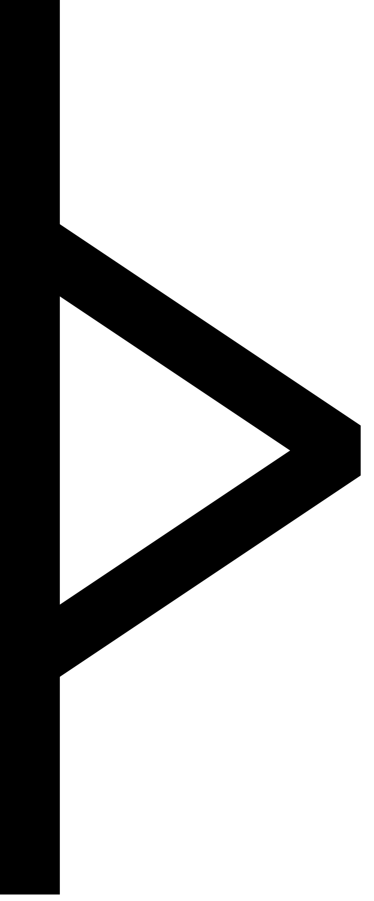
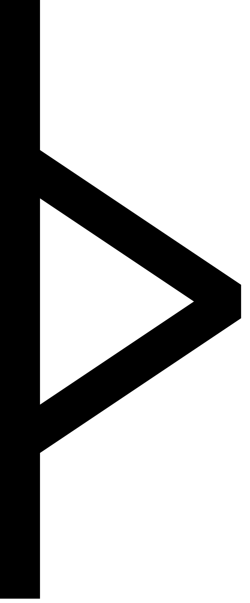
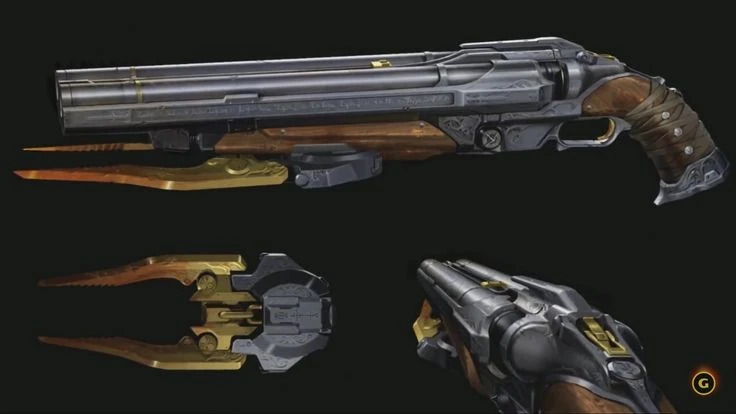
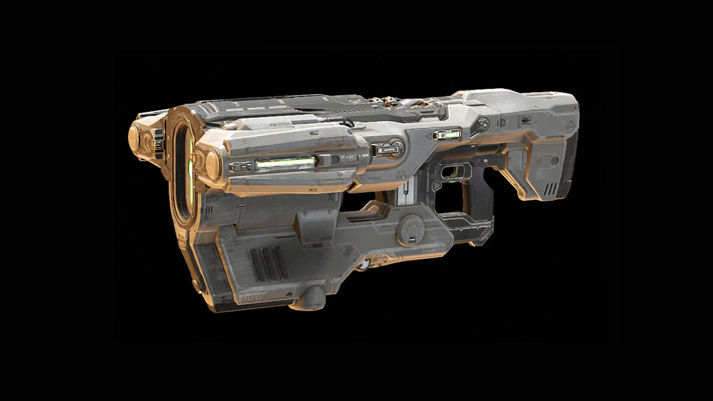
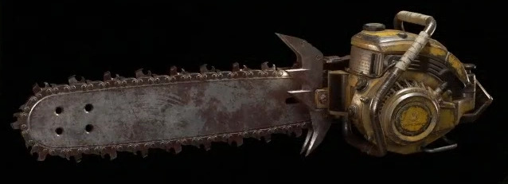
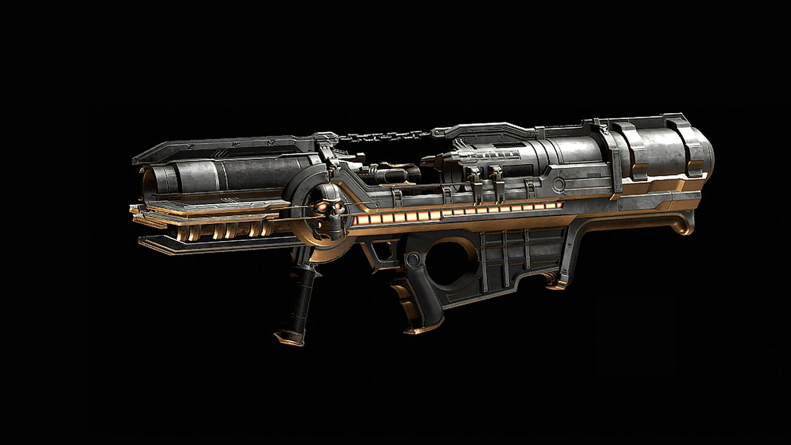
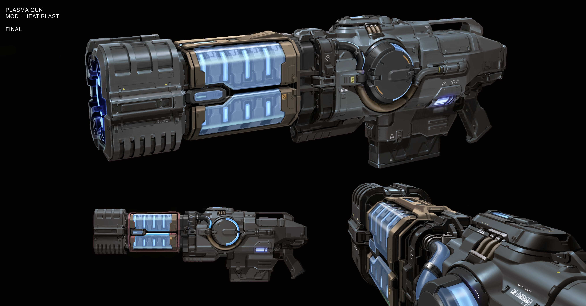

Historia de los Juegos
Juega al Doom Original
Aquí podrás disfrutar del Doom de 1993 directamente en tu navegador.
Controles
Mover Pj: W,A,S,D
Controlar Cámara: ↑, →,↓, ←
Disparar: Q
Interactuar: E
Cambiar arma: 1,2,3,4,5,6,7,8,9
Pause/Atrás: ESC
Doom Slayer Soundtrack
Galería de Armas del Doom Slayer
-  Super Shotgun
- Un arma devastadora que dispara dos cartuchos a la vez, ideal para masacres demoníacas a corta distancia.
-  BFG 9000
- El cañón definitivo, lanza un proyectil masivo de energía verde que aniquila todo en su radio.
-  Chainsaw
- Una motosierra infernal para desmembrar enemigos de cerca, perfecta para obtener munición adicional.
-  Rocket Launcher
- Lanza cohetes explosivos, ideal para limpiar áreas infestadas de demonios.
-  Plasma Rifle
- Dispara ráfagas de energía verde, perfecta para enfrentamientos prolongados contra enemigos resistentes.
Galería de Enemigos
Cacodemon
Un demonio flotante con un solo ojo y una boca gigantesca. Escupe bolas de energía que queman todo a su paso.
Imp
El enemigo más común en el Infierno. Lanza bolas de fuego y ataca con garras afiladas.

Baron of Hell
Un demonio gigantesco con cuernos y fuerza brutal. Sus ataques de energía verde son letales.
Arachnotron
Una araña mecánica con un cerebro demoníaco, equipada con una ametralladora que dispara sin piedad. Su velocidad y precisión la convierten en una amenaza letal.
Mancubus
Un gigante obeso con cañones de fuego en ambos brazos. Dispara ráfagas de bolas de fuego que arrasan todo a su paso, mientras su resistencia lo hace difícil de derribar.
Pinky
Un demonio rápido y feroz que carga a toda velocidad con sus cuernos afilados. Su fuerza bruta lo hace ideal para embestidas devastadoras.
Spectre
Una versión invisible del Pinky, casi imperceptible a simple vista. Ataca con ferocidad y su camuflaje lo hace un enemigo traicionero.
Revenant
Un esqueleto demoníaco con mochilas propulsoras y lanzamisiles. Dispara proyectiles teledirigidos mientras sobrevuela el campo de batalla.
Cyber Mancubus
Una versión mejorada del Mancubus con tecnología infernal. Además de lanzar bolas de fuego, dispara ácidos corrosivos que derriten todo a su paso.
Hell Knight
Primo del Baron of Hell, pero más ágil. Este demonio usa su fuerza sobrehumana para aplastar a sus enemigos con ataques cuerpo a cuerpo.
Dread Knight
Una versión mejorada del Hell Knight, con espadas de energía implantadas en sus brazos. Este demonio combina fuerza bruta con ataques ágiles y letales.
Doom Hunter
Un demonio mecanizado diseñado específicamente para cazar al Doom Slayer. Equipado con un jetpack, cañones de plasma y misiles, es una máquina de matar implacable.